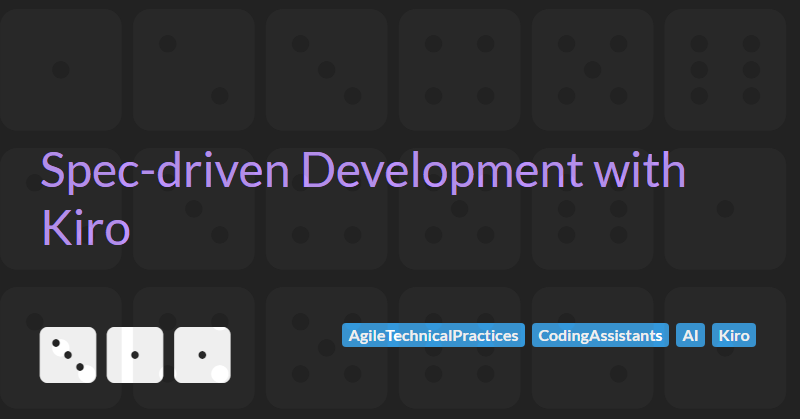
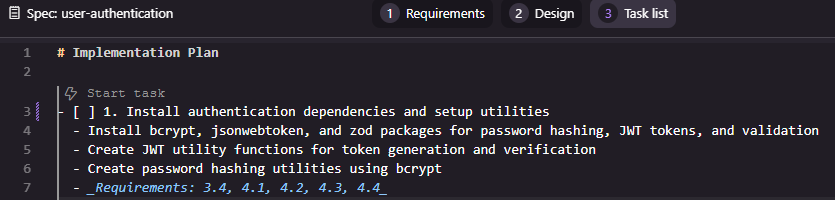

Spec-driven Development with Kiro
In my previous blog post Getting Started With Kiro, I introduced Amazon’s new spec-driven AI development tool and showed you how to create a boilerplate application.
In this follow up post, we will explore Kiro's spec-driven development workflow by building the very first feature for my multi-tenant task and project management platform, Yello.
Spec-driven Development Flow
The development flow in Kiro consists of 4 steps:
- Generating a
requirements.md - Creating a technical
design.md - Defining the implementation plan (
tasks.md) - Executing each of the tasks in the implementation plan
The general approach to executing the first 3 steps will be defined in the next section before we get into implementing an example by generating the detailed tasks for the Yello user authentication feature.
Generating Requirements
As all the application features are already defined (at a high level) in the product.md steering file (see my previous article for more details), all we need to do is activate spec mode and ask Kiro to implement the feature we want to build.
Open a chat window and select Spec

You can now describe the feature you want to build using the chat interface.
For example, all I did to kick off the Yello user authentication feature was type the prompt:
Implement the login and registration feature
Kiro then generated a requirements.md in the feature spec directory (in this case .kiro/specs/user-authentication). By default, a generated requirements file contains an introduction and one or more requirements. Each requirement is written as a User story with a set of acceptance criteria.
You can then inspect the contents of the requirements.md file and make any necessary adjustments. Changes can be made by manually editing the text, clicking the Refine button, or using the chat interface to ask Kiro to make updates.
Creating the Technical Design
Once you are happy that the requirements.md adequately describes the feature that you want to build you can move to creating the technical design by clicking the Design button at the top of the requirements window and then clicking on the Generate design based on requirements link in the empty design.md file.

Again, as with the requirements.md, you can then inspect the contents of the design.md file and make any necessary adjustments either by manually editing the text, clicking the Refine button, or using the chat interface to ask Kiro to make updates.
For the Yello user authentication feature the initial design.md file contained the technical translation of the requirements, including: a simple text-based architecture diagrams, the technology stack to be used, a list of components and interfaces, data models, error handling strategies, security considerations, testing strategy, and other implementation notes.
Weirdly the design.md did not contain any components for the front-end (despite Yello being a full stack monorepo). I decided not to make any changes to the design.md and defer creating the full vertical slice until later.
Defining the Implementation Plan
Now that we have our technical design.md, we can create a plan to implement this design.
Kiro breaks down the implementation of a feature into into small, focused tasks to in an attempt to improve clarity, and reduce ambiguity. This approach is intended to generate better results from the LLM than attempting to implement an entire feature all at once, as it allows the system to focus on one well-defined objective at a time. Each step can be validated and refined before moving on, reducing compounding errors and ensuring a higher overall quality of output. This structured workflow also keeps the developer-in-the-loop, enabling them to review intermediate results, adjust the plan as each task is completed.
Creating a tasks.md can be done by clicking the Task list button at the top of the design window and then clicking on the Generate task list based on the requirements and design link in the empty file.

The initial tasks.md file generated for the user authentication feature had 7 tasks with some broken down into 2-4 sub tasks (15 in total). Each task links back to the numbered requirements in the requirements.md for traceability.
As with other markdown files created in the spec-driven development flow, you can edit the tasks.md file manually or refine it using Kiro.
Implementing User Authentication in Yello
Having followed the Kiro's spec-driven development flow and created requirements.md, design.md, and task.md files we can now have Kiro generate the code and tests for this feature.
It is recommended to implement each task and sub task one at a time so we start with task 1.
To implement a task all we need to do it click the Start task button above the task in the task.md file.

Task 1: Install authentication dependencies and setup utilities
The first task installs authentication and validation dependencies (bcrypt, jsonwebtoken, and zod) and then creates two utility classes for managing JWT tokens and hashing passwords.
Inspecting the generated code, I immediately see a problem. Kiro has implemented the generateToken method incorrectly and the call to jwt.sign() is generating a TypeScript error due to the value being passed as the expiresIn parameter being the wrong type.
I try and vibe code around the problem by explaining the error to Kiro and asking it to fix the problem. Unfortunately the fix isn't great. Kiro's solution to the TypeScript error is to cast the value to any to get around problem rather than ensuring the correct type is passed. Clearly this is a bad fix as the reason I'm using TypeScript in the first place is to avoid type ambiguity.
I fix the issue manually.
But then I realise that maybe the problem is that I haven't told Kiro how it should use TypeScript. I use the chat interface and ask Kiro to update the steering files to follow TypeScript best practices and avoid using any. This change updates the tech.md file and also generates a new typescript.md steering file. Hopefully this change to the steering files will mean this kind of issue won't occur in the future.
The next problem I notice is that there are no tests. I ask Kiro to generate tests for the new utilities. It does an OK job, but some of the tests look verbose.
Building on the success of the TypeScript fix, I decide to use the chat interface again to ask Kiro to updated the steering files to ensure unit tests are generated as part of building features. Again, the change updated the tech.md file to record my preferences and generates two new steering files: spec-development.md (which seems to be instructions on how to include tests in implementation plans when building a tasks.md) and testing.md (which define the testing approach for the project, which includes unit, integration, and end-to-end tests).
I also ask Kiro to update the tasks.md file for the user authentication feature based on the new steering files. This adds several more subtasks around unit testing.
Task 1 is now complete and the generated code isn't that different from the initial code generated by Kiro. And, as a bonus, I've updating the steering files so that, in future tasks, Kiro should behave in a way that is more aligned to the way I want it to generated code.
Task 2: Create authentication service layer
Buoyed by the (eventual) success of task 1, I move on to task 2 - implementing the creating the authentication service layer.
Kiro's first attempt is terrible and has numerous issues:
- A new
AuthServiceis created with password hashing and token generation utilities but, for some reason, Kiro decides not to use the existing JWT or password classes created in task 1 - Unnecessary changes are made to JWT class. Not sure why the agent made these changes as the JWT class is not being used by the new auth service.
- Comprehensive unit tests are created for the
AuthService, but these break other tests because mocking was not cleaned up correctly.
I rollback.
Clearly Kiro needs more guidance. I ask Kiro to update the steering files to add guidance on reusing components rather than implementing everything from scratch. This updates the spec-development.md and creates a new component-reuse.md steering file. I inspect the files and these look reasonable.
I also ask Kiro to update the steering files to explicitly run all tests after developing a task to catch regressions and updates task plan to reflect recent steering changes.
Finally, I notice that the testing of the new AuthService has been made much more complex due to the use of static classes and global state. Clearly I need to tell Kiro about using
the dependency injection pattern for testability (which generates a new dependency-injection.md steering file).
I ask Kiro to implement the dependency injection feature . Interestingly, Kiro decides to generate its own solution to solve the DI problem rather than reusing an existing, established library such as Inversifyor typed-inject. This behaviour highlights a wider pattern in agentic coding systems: they often default to producing bespoke solutions, even when mature and widely adopted alternatives already exist. While this demonstrates creativity and an ability to reason about a problem from first principles, it can also introduce long term maintenance costs and subtle inconsistencies within a codebase.
I decide to keep Kiro's initial DI solution and focus on the task at hand.
Kiro's second go at implementing the authentication layer service is much cleaner and well tested.
As I was checking Kiro's work, I noticed some of the packages being used were significantly out of date and spent some time manually updating the packages to current versions. This seemed odd given that Yello is a newly generated green field project but it reflects a pattern that can appear when agents scaffold software. They often rely on internal heuristics or examples drawn from older templates, rather than performing a full contemporary survey of the ecosystem at the moment of generation. As a result, they may select versions that are technically valid yet already superseded, missing recent improvements, performance gains or important security fixes.
Finally, before moving to the next task, I refactored the repository tests. They were messy and fragile because they relied on several layers of mocks. I replaced that setup with a simpler and more reliable approach by switching the tests to an in-memory database.
Task 3: Create input validation schemas
Task 3 involved creating a library of validation schemas using Zod to validate requests when registering with or logging in to the application.
Kiro's implementation of this feature used old and deprecated APIs leading to TypeScript errors.
I attempted to get Kiro to fix this issues several times.
It first suggested Zod 4.x was unstable and reverted to 3.x. This is untrue and I reverted the change.
Then Kiro got itself into a loop of TypeScript linting errors (by trying to still use the deprecated feature) or test failures.
I eventually gave up and manually fixed the issue by simply replacing the deprecate z.string().email() code with z.email().
The experience shows that agents can struggle when a library introduces breaking changes or reworks core patterns. They may cling to outdated examples even when up to date documentation is available. Until agents develop a more reliable understanding of version transitions and deprecations, human review will remain essential to ensure that generated code keeps pace with the evolving ecosystem.
Whist all the code for this feature had been implemented, several of the sub tasks (3.3 Implement login validation schema and 3.4 Write unit tests for login validation schema) were still marked as incomplete and needed to be manually marked as done.
Task 4: Create authentication middleware
For task 4, Kiro needed to implement the JWT authentication middleware that would be used to secure each of the REST endpoints and ensure only registered and logged in users could access secure routes.
Again tasks that had been completed by Kiro had not been marked as completed and needed to be manually marked as completed.
Looking at the generated code, there was a lot of duplication between the createAuthMiddleware() and createOptionalAuthMiddleware() functions. To fix this I manually implemented an abstraction to reuse the core logic.
As part of this refactor it became clear that Kiro was adding tests that did not belong in the unit under test. For example, it checked whether the middleware detected an invalid or expired token, even though that behaviour is handled by the JWTUtils module used by the middleware. These tests added noise and blurred the boundary between unit and integration testing. They also created a false sense of coverage by exercising logic in the wrong place, which would make the test suite harder to understand and harder to maintain.
This highlights yet another broader challenge with coding agents. Agents often try to increase coverage by testing every visible branch, yet they may lack a firm grasp of responsibility boundaries within a system. Effective unit testing depends on isolating components and verifying only what they control. When that principle is ignored, the test suite becomes brittle and harder to trust.
Task 5: Implement authentication API routes
In task 5 we introduce the core code for the REST endpoints that the frontend will use for login, registration, getting the user's own profile, and logging out.
Kiro's initial implementation is of low quality. The tests are overly verbose, with extensive duplication and excessive mock assertions, resulting in 872 lines of code for just four simple endpoints. Additionally, many of the generated test scenarios cover behaviour that is outside the responsibility of the unit being tested.
Given that both task 4 and 5 resulted in poorly structured tests, I spend some time updating the steering files to hopefully create better tests by focusing on testing the behaviour of the unit under test and minimising duplication by extracting common setup code and assertions into helper functions.
This change resulted in cleaner, more readable tests and reduced the test files size by almost two-thirds.
Task 6: Integrate authentication routes with main application
Now all the building blocks are in place, we can finally expose the REST endpoints via the Hono application layer and create integration tests to test the building blocks work together as expected.
Again, Kiro's implementation was excessively complex. It mocked a bunch of dependencies (so the tests were not really integration test) and didn't cover all the routes.
I manually refactor the code to centralise the creating of the app routes and rewrote the integration test so they are now much simpler (53 lines of code instead of 271). These new integration tests also only mock the external dependencies (in this case the database is mocked with an in-memory db) and so exercise a lot more of the system components.
Task 7: Create comprehensive integration tests for authentication flow
Although this task is labelled as creating integration tests, those were already completed in the previous task. The actual aim here is to produce end to end tests for authentication flows, such as a user registering, logging in, and then trying to access protected routes.
I'm was hoping Kiro will be inspired by my simple approach to integration testing and follow the same pattern for creating an end-to-end API test for the authentication flow.
However, Kiro generated nearly 500 lines of code and 11 end-to-end tests. Many of these tests cover low level scenarios covered by the unit and integration tests. Clearly more guidance in needed on creating useful tests aligned with a pragmatic test pyramid.
Conclusions
In working through the first feature for Yello, it became difficult to avoid a more sceptical view of spec driven development as it currently stands. Although Kiro provides a structured workflow, the tool frequently produced code and tests that were unfocused, outdated, or misaligned with the goals of the feature. Instead of streamlining development, the process often introduced extra friction, with significant time spent correcting misunderstandings, rolling back misguided changes, and dealing with an agent that tended to generate noise rather than clarity.
It also raised a concern about how tools like this may influence less experienced developers. Not because of any lack of ability, but because an agent that confidently produces detailed yet questionable solutions can quietly steer someone towards design choices they may not have the background to challenge. With enough generated code in place, it becomes hard to rethink the approach without unpicking a great deal of scaffolding, which risks leaving developers boxed into patterns they never consciously selected.
What became increasingly clear is that Kiro only approaches usefulness when given heavy, continuous guidance. Steering files do help, but only after repeated rounds of refinement, and even then the improvements were uneven. The amount of effort needed to shape Kiro’s behaviour raises real questions about whether the approach scales or genuinely reduces workload. Much of the time saved by automating boilerplate was consumed by diagnosing odd decisions, correcting poor test suites, and compensating for the tool’s tendency to invent bespoke solutions to problems that already have mature answers.
Taken together, this experience casts doubt on the practical value of spec driven development in its current form. If the tool’s outputs demand this level of supervision, it becomes hard to see it as an accelerator rather than a distraction. Still, this is only one data point. Further experimentation with different projects, more refined steering files, or future improvements to Kiro itself may yet reveal a more promising path. For now, though, the gap between the theory and the lived reality remains difficult to ignore.